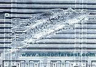

Die
Scratching
Die scratching
is a failure mechanism wherein the surface of the die is
mechanically
damaged by a
rigid
object
that is accidentally dragged across or moved over it. Die scratching
usually results in gross abrasion, scraping, or laceration damage on the
die's active circuit (see Figure 1). The damage itself is referred
to as a 'die scratch', while the damaged die is referred to as a
'scratched die.'
Die scratches
are caused by mechanical means, usually by
mishandling.
'Mishandling' in this context also includes the improper or careless use
of tools and accessories used by an operator while working. It is common
to see die scratches that resulted from a pointed object such as a probe
needle or tweezer accidentally touching the die and sweeping across its
surface.
|
 |
|
Figure 1. Optical photo (left) and SEM
photo (right) of die scratches
|
Scratches that reach
the
active circuit beneath the glassivation will immediately
lead to
electrical
failure due to
shorted
and
open
metal lines. Metal shorts are commonly seen in narrowly-spaced
metal lines, wherein the displaced metal materials bridge the lines
together. Open circuits are often induced in narrow, isolated
lines.
Shallow
scratches on the die that do not reach the active circuit will not cause
immediate electrical failure, but may pose
reliability
risks
if the top passivation has been breached.
For instance, the seepage of moisture and contaminants through a damaged
portion of the glassivation can result in
die corrosion.
Die scratching can occur
anywhere from wafer fab to assembly prior to
encapsulation. Picking up a die carelessly with a tweezer for
eutectic die attach can result in the tweezer slipping out of position
while scratching the die surface. Improper equipment set-up can cause
probe needles, die overcoat dispense tools, and the like to land on and
scratch the surface of the die.
Foreign materials and dirt
embedded at the pick-up
tool tips of pick-and-place machines during die attach
can also cause die scratches. Similarly, the use of defective, worn-out,
or damaged pick-up tools can scratch the die surface. Manual capping of
ceramic packages prior to sealing may also cause a die scratch, if the
cap or lid inadvertently gets into contact with the surface of the die.
Die scratches
are quite easy to confirm by
optical
microscopy,
since they truly resemble scratches seen everyday in common objects.
See also:
Package
Failure Mechanisms;
Die
Failure Mechanisms;
Wirebonding; Failure Analysis
HOME
Copyright
©
2005.
EESemi.com.
All Rights Reserved.